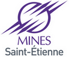

DIVAY ValentinLes Fermes61200 Fontenai sur Orne 06 48 77 80 87 divayvalentin@gmail.com 19 ans Français Permis B obtenu en 2015 Propriétaire d'un véhicule |
|
Formation |
||
| Baccalauréat série S | 2014 | Mention très bien |
| Classe préparatiore | 2014 - 2016 | PCSI puis PC* au lyvée Victor Hugo à Caen Obtention du concours Mines-Télécom en 2016 |
| Aujourd'hui | Ecole des Mines de St Etienne, cursus Ingénieur Spécialisé en Microélectronique et Informatique (ISMIN) | |
| Formation professionnelle | 19 février 2016 | Premiers Secours en Equipe (PSE1) à la Protection civile du Calvados |
| 21 mai 2016 | Brevet National de Sécurité et de Sauvetage Aquatique (BNSSA) au Suaps de CAEN | |
Compétences informatiques |
||
| Pack Office | ||
| Python | ||
| HTML5, CSS3, C, assembleur, Matlab | En cours d'apprentissage | |
Langues |
||
| Français | Langue maternelle | |
| Anglais | B2 | |
| Espagnol | A2 - 2nde langue (5 ans au collège/lycée) | |
| Allemand | A1 - 3ème langue (3 ans au lycée) | |
Expérience |
||
| Professionnelle | 45 jours en tant que surveillant de baignade (BNSSA) dans un centre aquatique (Forméo à Falaise, 14) Mon rôle : veiller à la sécurité de la clientèle, porter secours si besoin est, faire respecter le règlement du centre aquatique |
|
| Associative |
Membre de la Junior Entreprise (M-GaTE) de l'école des Mines de St Etienne cursus ISMIN
Mon rôle : développer des logiciels, des applications mobiles et des sites web pour répondre aux besoins des clients de la Junior Entreprise |
|
| Sportive | 2003 - 2010 | Natation : 8 ans en club, compétiteur |
| 2010 - 2011 | Water-polo : 2 ans en club | |
| 2012 - 2014 | Canoë-kayak : 3 ans en club | |